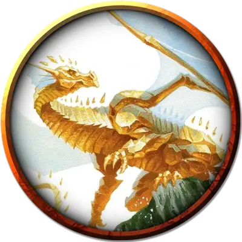

Великий топазный вирм
Topaz Greatwyrm
Громадный Дракон (Самоцветный), любое нейтральное мировоззрение

Класс Доспеха 21 (природный доспех)
Хиты 507 (26к20 + 234)
Скорость 60 футов, плавая 60 футов, летая 120 футов (парит), копая 60 футов
| мод | спас | ||
|---|---|---|---|
| СИЛ | 28 | +9 | +9 |
| ЛОВ | 14 | +2 | +10 |
| ТЕЛ | 29 | +9 | +17 |
| мод | спас | ||
|---|---|---|---|
| ИНТ | 30 | +10 | +10 |
| МДР | 24 | +7 | +15 |
| ХАР | 25 | +7 | +15 |
Навыки Восприятие +15, История +18, Магия +26
Иммунитет к урону некротическая энергия
Иммунитет к состояниям испуг, отравление, очарование, сбивание с ног
Чувства истинное зрение 120 футов, пассивное Восприятие 25
Языки Общий, Драконий
Опасность 26 (90000 опыта)
Бонус мастерства +8
Особенности
Самоцветное пробуждение (перезаряжается после короткого или продолжительного отдыха). Если хиты великого вирма были уменьшены до 0, его текущее общее количество хитов вместо этого становится 400 хитов, он восстанавливает своё Оружие дыхания и все израсходованные применения Легендарного сопротивления. Кроме того, великий вирм теперь может использовать свой Массовый телекинез в течение следующего часа. Наградите партию дополнительными 90 000 опыта (всего 180 000 опыта) за победу над великим вирмом после активации его Самоцветного пробуждения.
Легендарное сопротивление (4/день). Если великий вирм провалит спасбросок, он может вместо этого преуспеть в нем.
Необычная природа. Великому вирму не требуются пища или вода.
Персонализация дракона. Как уже говорилось в «Руководстве Мастера», вы можете настроить блок статистики любого дракона, чтобы отразить его уникальный характер. Незначительные изменения, такие как приведенные ниже, легко сделать, и они не влияют на ПО дракона. (Fizban's Treasury of Dragons)
Языки. Большинство драконов предпочитают говорить на Драконьем, но для общения с союзниками и приспешниками изучают Общий. Но, учитывая высокий Интеллект и продолжительный срок жизни, драконы могут легко выучить дополнительные языки. Вы можете добавить языки в блок статистики дракона.
Навыки. Большинство драконов владеют навыками Восприятие и Скрытность, а многие драконы владеют дополнительными навыками. Как и в случае с языками, вы можете изменить список навыков дракона (даже удвоить бонус мастерства), чтобы отразить его интересы и занятия. Вы также можете наделить дракона владениями инструментами, особенно если дракон проводит время в гуманоидной форме.
Другие черты и действия. Вы можете заимствовать черты и действия у других монстров, чтобы придать дракону уникальную изюминку. Рассмотрим эти примеры:
Изменение формы. Вы можете решить, что дракон приобретает это действие в более раннем возрасте, чем обычно, особенно если вы хотите представить в своей кампании дракона в гуманоидной форме. (См. металлические драконы).
Поглощение урона. Вы можете решить, что красный или золотой дракон не только не получает урон от огня, но и исцеляется от него. (См. мясной голем [flesh golem]).
Облёт. Дракон - проворный летун, быстро вылетающий из зоны досягаемости врагов. (См. перитон [peryton]).
Подражание. Изображение персонажей или их союзников может стать забавным трюком для хитрого дракона. (См. кенку [kenku]).
Омоложение. Вы можете решить, что драконы в вашей кампании, будучи неотъемлемой частью Материального плана, почти невозможно уничтожить. Жизненная сущность дракона может храниться в яйце, из которого он появился на свет, в его кладе или в пещерном зале в центре мира, так же как сущность лича спрятана в филактерии. (См. лич [lich]).
Особые чувства. У большинства драконов есть слепое зрение и темное зрение. Вы можете улучшить зрение до истинного зрения или наделить дракона скоростью рытья или чувством вибрации. (См. зрение и свет).
Прокладывание туннеля. Эта особенность может быть присуща любому дракону, обладающему скоростью копания - он может двигаться сквозь твёрдую породу, оставляя за собой туннель. (См. бурый увалень [umber hulk]).
Действия
Мультиатака. Великий вирм совершает одну атаку Укусом и две атаки Когтями.
Укус. . Рукопашная атака оружием: +17 к попаданию, досягаемость 15 фт., одна цель. Попадание: 20 (2к10+9) колющего урона плюс 16 (3к10) урона силовым полем.
Когти. . Рукопашная атака оружием: +17 к попаданию, досягаемость 10 фт., одна цель. Попадание: 18 (2к8+9) рубящего урона. Если целью является существо размера Огромный или менее, оно захвачено (Сл высвобождения 19) и опутано до тех пор, пока этот захват не окончится. Великий вирм может удерживать только одно существо, схваченное таким образом за раз.
Оружие дыхания (перезарядка 5-6). Великий вирм выдыхает сокрушительную силу в 300-футовом конусе. Все существа в этой области должны совершить спасбросок Ловкости Сл 25. При провале спасброска существо получает 71 (11к12) урона силовым полем и падает ничком. При успешном спасброске оно получает половину урона и не падает. В случае успеха или провала скорость существа становится равной 0 до конца его следующего хода.
Использование заклинаний (Псионика). Великий змей накладывает одно из следующих заклинаний, не требующее компонентов заклинания и использующее Интеллект в качестве базовой характеристики (Сл спасброска от заклинаний 26 , +18 к попаданию атаками заклинаниями):
• 1/день каждое: рассеивание магии [dispel magic], узилище [forcecage], уход в иной мир [plane shift], изменение тяготения [reverse gravity], остановка времени [time stop].
Массовый телекинез (только при активации Самоцветного пробуждения; восстанавливается после короткого или продолжительного отдыха). Великий вирм нацеливается на любое количество существ и объектов, которые он может видеть в радиусе 120 фт. от себя. Ни одна цель не должна весить более 4000 фунтов, и объекты не могут быть выбраны, если их носят или несут. Каждое выбранное существо должно успешно совершить спасбросок Силы Сл 26 или становится схваченным телекинетической хваткой великого вирма. В конце своего хода существо может повторить спасбросок, в случае успеха окончивая действие эффекта на себе .
В конце хода великого вирма он может перемещать каждое существо или объект, находящийся в его телекинетическом захвате, на расстояние до 60 фт. в любом направлении, но не дальше 120 фт. от себя. Кроме того, он может выбрать любое количество существ, удерживаемых таким образом, и нанести 45 (7к12) урона силовым полем каждому из них.
Бонусные действия
Изменение формы. Дракон магическим образом превращается в любое существо Среднего или Маленького размера, сохраняя при этом все свои характеристики (кроме размера). Это превращение заканчивается, если хиты дракона опускается до 0 или он использует бонусное действие для его окончания.
Псионический шаг. Дракон магически телепортируется в свободное пространство, которое он может видеть на расстоянии 60 фт. от себя.
Легендарные действия
Топазовый великий вирм может совершить 3 легендарных действия, выбирая из представленных ниже вариантов. За один раз можно использовать только одно легендарное действие, и только в конце хода другого существа. Великий вирм восстанавливает использованные легендарные действия в начале своего хода.
Коготь. Дракон совершает одну атаку когтями.
Псионика (стоит 2 действия). Дракон использует Псионический шаг или Использование заклинаний.
Психический луч (стоит 3 действия). Великий вирм испускает луч психической энергии в 90-футовой линии шириной 10 футов. Все существа в этой области должны совершить спасбросок Интеллекта Сл 26, получая 27 (5к10) урона психической энергией в случае провала или половину этого урона в случае успеха.
Описание
Даже в большей степени, чем их цветные и металлические сородичи, самоцветные драконы очарованы развитием своего драконьего зрения и слиянием осознания их эха на Материальном плане. Некоторые из них верят, что, поступая таким образом, они предпринимают шаги к воссоединению разрушенного сознания Сардиора Рубинового Дракона, и они преследуют это пробуждение как акт почти религиозной преданности. Другие стремятся использовать свои знания о многих мирах Материального Плана в качестве источника силы — и действительно, самоцветный дракон, который становится великим вирмом, имеет доступ к почти невообразимой силе.
Восхождение самоцветных великих змеев превращает их тела в кристалл, их чешуя сверкает, как бриллианты. Их оружие дыхания становится мощными волнами сокрушительной силы, которые могут остановить практически любое существо на его пути. Но самой мощной способностью великих вирмов является телекинез в беспрецедентном масштабе — самоцветный великий вирм может телекинетически захватить целую толпу, а затем унести этих беспомощных людей в свое логово.
Великие вирмы Сардиора
Пять драгоценных великих вирмов называют себя танами Сардиора и считают себя ответственными за сохранение памяти о своем давно потерянном прародителе. Эти великие вирмы называются: Алейтилитос (аметистовый великий вирм), Отель (кристаллический великий вирм), Смартгас (изумрудный великий вирм), Чарсима (сапфировый великий вирм) и Титоннас (топазовый великий вирм). Каждый тан активно ищет свое эхо в мирах Материального Плана, надеясь слиться с этими драконами, с целью в конечном итоге объединиться, чтобы воссоздать великого Рубинового Дракона.